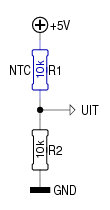
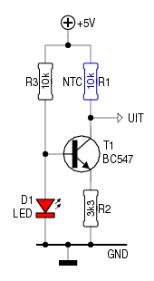
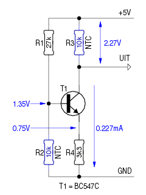

Als een NTC wordt ingezet om de temperatuur te bewaken of
te meten, wordt hij meestal aangesloten zoals hiernaast te zien
is.
Meestal voldoet zulke opstelling, maar ideaal is ze niet.
Wie verwacht dat een weerstandsvariatie van 10% bij de
NTC een gelijkaardige spanningsvariatie over de NTC zal veroorzaken,
komt bedrogen uit.
Laten we even bc aan het werk zetten:
eljudnir/pros: bc bc 1.06 Copyright 1991-1994, 1997, 1998, 2000 Free Software Foundation, Inc. This is free software with ABSOLUTELY NO WARRANTY. For details type `warranty'. scale=9 spanning=5 ntc=10000 \* We berekenen de spanning die over de NTC valt. *\ (spanning/(ntc+10000))*ntc 2.500000000 \* Nu verlagen we de NTC-weerstand van 10k naar 9k. *\ ntc=9000 (spanning/(ntc+10000))*ntc 2.368413000 \* Het verschil tussen beide NTC-waarden. *\ 2.500000000-2.368413000 .131587000De spanning over de NTC varieert maar 0.13V i.p.v. de 0.25V die men zou verwachten!
 Wanneer we R2 vervangen door een stroombron, ziet het er heel wat beter uit. Immers, als de stroom door de NTC gelijk blijft, moet de spanning over de NTC gelijke tred houden met zijn weerstand.
We gaan nogmaals bij bc ten rade:
\* De spanning over de LED *\ u_led=1.5 \* De spanning over de basis/emitter-overgang van T1 *\ u_be=0.6 \* Het verschil tussen beiden komt over R2 te staan *\ u_r=u_led-u_be \* De stroom die deze stroombron aan de NTC levert *\ i=u_r/3300 ntc=10000 \* De spanning over de NTC *\ i*ntc 2.727270000 \* Weer verlagen we de NTC-weerstand van 10k naar 9k. *\ ntc=9000 i*ntc 2.454543000 \* En het verschil is... *\ 2.727270000-2.454543000 .272727000De spanningsvariatie over de NTC is hier meer dan het dubbele, vergeleken met het vorige schema!

Kan het nog beter?
Jazeker, als we ook de stroombron temperatuur-afhankelijk maken.
Dat kunnen we doen, door een tweede NTC in te zetten, zoals het
schema hiernaast toont. Beide NTC's dienen daar geplaatst te
worden, waar de temperatuur moet bewaakt of gemeten worden.
Wanneer nu R2 opwarmt, daalt zijn weerstand. Daardoor daalt ook
de basisspanning van T1, en tevens de spanning over R4.
De stroombron zal daardoor minder stroom door R3 laten vloeien,
met het gevolg dat de spanning over R3 daalt. We hebben dus een
stroombron die zich gedraagt als een weerstand met een
PTC-karakteristiek.
Maar omdat ook de weerstand van R3 daalt, zal de spanning
daarover nog méér dalen.
Weer laten we bc aan het woord:
spanning=5 ntc=10000 \* De spanning op de basis van T1 *\ (5/(ntc+27000))*ntc 1.351350000 \* De spanning over R4 *\ ((5/(ntc+27000))*ntc)-0.6 .751350000 \* De stroom die de stroombron levert *\ (((5/(ntc+27000))*ntc)-0.6)/3300 .000227681 \* De spanning over R3 *\ ((((5/(ntc+27000))*ntc)-0.6)/3300)*ntc 2.276810000 /* De weerstand van beide NTC's verlagen. */ ntc=9000 ((((5/(ntc+27000))*ntc)-0.6)/3300)*ntc 1.772703000 2.276810000-1.772703000 .504107000De spanningsvariatie is nu bijna het dubbele van de vorige versie, en bijna het viervoudige van de eerste versie bij eenzelfde weerstandsvariatie van de NTC('s).